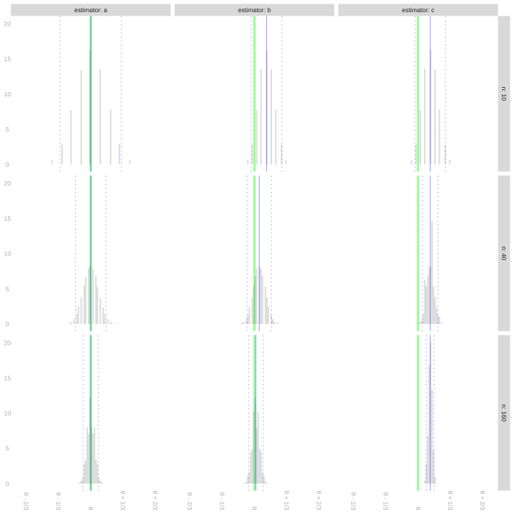
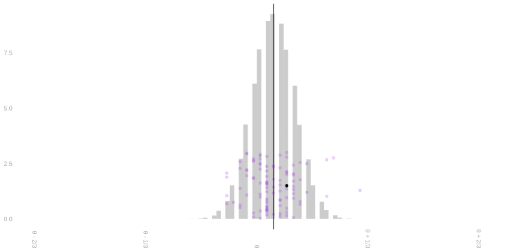

19 Homework: Comparing Estimators
Download this assignment — unzip it, open homework-comparing-estimators.qmd in Positron, and answer inside the answer blocks.
$$ \newcommand{X}{} \newcommand{Y}{} % A hex digit after # inside a macro body is eaten by build-time expansion, so digit-leading hexes spell # via .
$$
\DeclareMathOperator{\RMSE}{RMSE} \DeclareMathOperator{\mathop{\mathrm{E}}}{E} \DeclareMathOperator{\mathop{\mathrm{\mathop{\mathrm{V}}}}}{V} \DeclareMathOperator{\mathop{\mathrm{sd}}}{sd} \DeclareMathOperator{\mathop{\mathrm{\widehat{V}}}}{\widehat{V}} \DeclareMathOperator{\mathop{\mathrm{bias}}}{bias} \newcommand{\thetaprior}{\theta^{\text{prior}}} \newcommand{\nprior}{n^{\text{prior}}} \newcommand{\yprior}{y^{\text{prior}}}
Introduction
Summary
This homework continues where the last one left off. You’ve now seen that biased estimators can mess up coverage, and you’ve learned exactly how: coverage depends on the ratio bias/se. Now we’ll dig into the tradeoffs involved in choosing an estimator.
We’ll start with the bias/variance tradeoff. An estimator can be bad in multiple ways: too much bias, too much variance, or both. We’ll use root-mean-squared error to summarize overall accuracy.1
Then we’ll talk about consistency—the one property that almost everyone agrees they want an estimator to have. It’s really the bare minimum: if you’re willing to collect enough data, you can get as close to the estimation target as you want. We’ll see which of our prior-based estimators are consistent and which aren’t.
And we’ll see what consistency doesn’t promise. An estimator can be consistent—its typical error vanishing as you collect more data—and still give you interval estimates that get worse as n grows. We’ll also work out how big a sample has to be for a chosen precision.
Finally, you’ll use the expectation and variance calculations from your previous homework to study a different sampling design.
The Point
Knowing this stuff will help you choose between estimators yourself, think about the choices others make, and communicate about these decisions and their implications. It’ll help us think about calibration later on, too, because when we know our point estimators are close to the estimation target, we can get away with using approximations like Taylor series to understand their sampling distributions.
Bias, Variance, and Tradeoffs
Review: Prior-Based Estimators
In the last homework, we worked with estimators that incorporate prior information. Recall the general form: if we have \nprior prior observations with mean \thetaprior, we can combine them with our sample to get \tilde{Y}_{\nprior} = \frac{1}{\nprior + n} \cb*{ \nprior\thetaprior + n\bar Y }. You calculated the bias and standard deviation of this estimator: \begin{aligned} \text{bias} &= \frac{\nprior( \thetaprior - \theta)}{\nprior + n} \\ \mathop{\mathrm{sd}}(\tilde Y_{\nprior}) &= \sqrt{\frac{n\theta(1-\theta)}{(\nprior + n)^2}} \end{aligned} Throughout, assume the prior mean is not exactly the population proportion, \thetaprior \neq \theta, and that the population is not degenerate, 0 < \theta < 1.
And you saw, both in the sampling distribution plots and in the coverage simulation, that bias causes problems for interval estimation. The lecture gave us the precise relationship: coverage depends on the ratio bias/se.
Now we’ll dig deeper into the tradeoffs involved in choosing an estimator.
The Bias/Variance Tradeoff
Here’s the figure from last homework showing three estimators at three sample sizes. Recall that estimator ‘a’ is the sample mean (unbiased), estimator ‘b’ uses a fixed number of prior observations (bias shrinks with n), and estimator ‘c’ scales the prior observations with sample size (constant bias).
As the figure shows, there are multiple ways to be a not-so-great estimator. You can have no bias—or small bias—but so much variance that in many surveys (i.e. many draws from the sampling distribution) you’re way off. That’s what we see happening with ‘estimator a’ at sample size n=10. You can have low variance but comparatively high bias, like we see with ‘estimator c’ at sample sizes n=40 and n=160. We often use root-mean-squared-error to summarize the typical magnitude of an estimator’s error.
\RMSE(\hat\theta) = \sqrt{ \mathop{\mathrm{E}}\sb*{ \cb*{\hat \theta - \theta}^2 } }
Famously, we can decompose its square into a sum of squared bias and variance.
\begin{aligned} \mathop{\mathrm{E}}\sb*{ \cb*{\hat\theta - \theta}^2 } &= \mathop{\mathrm{E}}\sb*{ \cb*{ \p*{\hat\theta - \mathop{\mathrm{E}}[\hat\theta]} + \p*{\mathop{\mathrm{E}}[\hat\theta] - \theta} }^2 } \\ &= \mathop{\mathrm{E}}\sb*{ \cb*{ \hat\theta - \mathop{\mathrm{E}}[\hat\theta]}^2 } + 2\mathop{\mathrm{E}}\sb*{ \cb*{ \hat\theta - \mathop{\mathrm{E}}[\hat\theta]} \cdot \cb*{\mathop{\mathrm{E}}[\hat\theta] - \theta} } + \mathop{\mathrm{E}}\sb*{ \cb*{ \mathop{\mathrm{E}}[\hat\theta] - \theta }^2 } \\ &= \mathop{\mathrm{\mathop{\mathrm{V}}}}[\hat\theta] + 2 \times 0 + \underset{\text{bias}(\hat\theta)^2}{\cb*{ \mathop{\mathrm{E}}[\hat\theta] - \theta }^2} \\ \end{aligned}
Just to check that you’re following the math, do this quick exercise.
Now here’s a real one. We’re talking about different estimators for the same estimation target. This exercise is an opportunity to think about how you might choose between them. I’ve asked you to answer a few questions and sketch a few things to help you think through the issues, but I’ve tried to leave this pretty open-ended because this really is a question without a single right answer. To some extent, it’s about what you think is important. You don’t have to stand by this choice for the rest of your life, so it’s okay if you miss something important and wind up changing your mind later, e.g. when you talk with your classmates or read the solution. It’s really just to get you started thinking about these kinds of choices and what you might want to consider when making them.
Consistency
We say an estimator is consistent if it converges to the estimation target as sample size increases to infinity. That’s being vague. There are a couple ways this is imprecise.
First, what does it mean to be the same estimator at different sample sizes? E.g., the definition of estimator ‘c’ in Figure 21.1 depends on n, so is that ‘an estimator’? The resolution for this one is easy—if we really want to be precise, we explicitly specify an estimator for each sample size: we say ‘an estimator sequence’ is consistent instead of ‘an estimator’. When we say ‘an estimator’ is consistent, we expect the person we’re talking about understands what sequence of estimators we actually mean. This is just a language thing.
The second thing that’s imprecise is what it actually means for a random variable, like an estimator, to converge to something. It turns out that there are a lot of different, useful ways to think about this happening. One of the simpler versions is called convergence in mean square. A sequence of random variables Z_1,Z_2,Z_3,\ldots converges in mean square to a a random variable Z, which is often but not necessarily a constant, if the root mean square difference between them, \sqrt{E[(Z_n - Z)^2]}, gets arbitrarily small (i.e., converges to zero) as n \to \infty. And we say an estimator \hat\theta is consistent in mean-square if it converges in mean square to the estimation target \theta as sample size n goes to infinity.
Here are a few exercises to get you thinking about what consistency can and can’t look like.
Convergence in Probability
Now let’s think about another notion of convergence. If an estimator’s sampling distribution ends up in the right location (\text{bias} \to 0) with arbitrarily little spread (\text{standard deviation} \to 0), then it makes sense that every draw from that sampling distribution will be close to the estimation target. Or almost every draw, anyway.
We tend to visualize our estimate as a single dot, e.g. the black dot below. That’s what it is. One number. But when we want to think about what estimates we could have plausibly gotten, we tend to think about the dots we’d get if we were to repeat our survey a hundred times or a billion, each time calculating an estimate the same way. The sampling distribution of our estimator. We can plot actual dots, like the purple ones below, or histogram them, to get a sense of what this looks like. Hopefully all this is familiar-verging-on-boring to you by now.

Whereas convergence in mean square is about the typical distance between these dots and our estimation target, convergence in probability is about the fraction of these dots that falls within a small distance \epsilon. We say a random variable \hat\theta converges in probability to \theta if, for anyone’s idea of ‘sufficiently close’, the probability that \hat\theta is sufficiently close to \theta goes to one. P(\lvert\hat\theta - \theta\rvert \le \epsilon) \to 1 \qqtext{ as } n \to \infty \qqtext{ for any } \epsilon > 0 Or equivalently, the probability that it isn’t sufficiently close goes to zero. That is, if P(\lvert\hat\theta - \theta\rvert > \epsilon) \to 0 \qqtext{ as } n \to \infty \qqtext{ for any } \epsilon > 0
If \hat \theta is an estimator and \theta is our estimation target, we say \hat\theta is consistent in probability if it converges in probability to \theta.2
What Consistency Implies
We now have two notions of consistency on the table and nothing connecting them. Chebyshev’s inequality connects them.
Centred on the estimation target rather than on the estimator’s own mean, it says P(\lvert\hat\theta - \theta\rvert > \epsilon) \le \frac{\mathop{\mathrm{E}}\sb*{(\hat\theta-\theta)^2}}{\epsilon^2} = \frac{\RMSE(\hat\theta)^2}{\epsilon^2}. Fix \epsilon and let n grow. If the root-mean-squared error goes to zero, the bound on the right goes to zero, so the probability on the left does too. Which implies that mean-square consistency implies consistency in probability: if your typical error vanishes, then you land close to the target with probability approaching one.
Negligible and Non-Negligible Bias
Mean-square consistency is a promise about typical error, and even that promise buys less than it sounds like. Coverage runs on the ratio \text{bias}/\text{sd}, and for our prior-based estimator that ratio is simple, because the \nprior + n in the bias and in the standard deviation cancels. \frac{\mathop{\mathrm{bias}}(\tilde Y_{\nprior})}{\mathop{\mathrm{sd}}(\tilde Y_{\nprior})} = \frac{\nprior(\thetaprior - \theta)}{\sqrt{n\theta(1-\theta)}}. So the ratio is governed by \nprior against \sqrt n. And \nprior is something we choose.
How Big a Sample?
The Rotational Design, Revisited
A population consists of n people whose response is 0 followed by n people whose response is 1, arranged in a circle. Choose a starting person uniformly at random and sample that person and the next n-1 people around the circle. Let \hat\theta be the proportion of 1s in the sample.
Extra Credit: An Arrangement You Don’t Know
Keep the circle of 2n people and the same sampling rule, but now suppose you don’t know how many responses are 1 or how they are arranged. You want a variance bound that works for every such population.
I like to say ‘typical distance’ and ‘typical error’ instead of ‘root-mean-squared distance’ and ‘root-mean-squared error’ because it’s shorter, gets the essential idea across, and doesn’t have a technical meaning that might conflict with my use of it this way like ‘average distance’ would.↩︎
This is nonstandard terminology. What I’m calling ‘consistency in probability’ is usually called weak consistency for reasons that are a little hard to explain without a fair amount of background in topology and measure-theoretic probability. If you say ‘consistent in probability’, people who usually say weak consistency will know what you mean and maybe even follow your lead, but it may take them a second. ‘Convergence in probability’ is standard terminology, for what it’s worth.↩︎